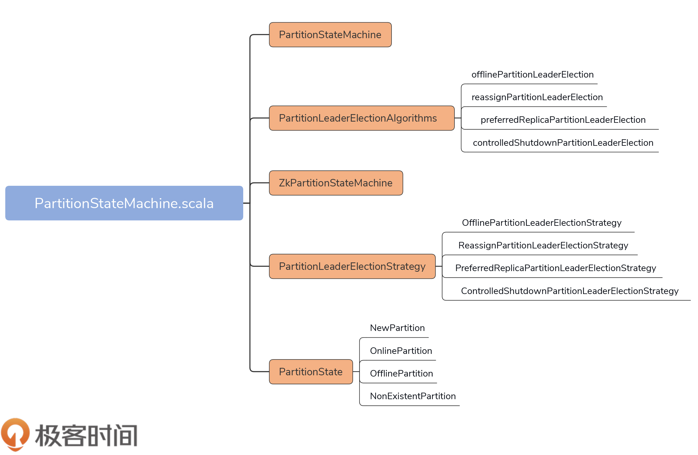
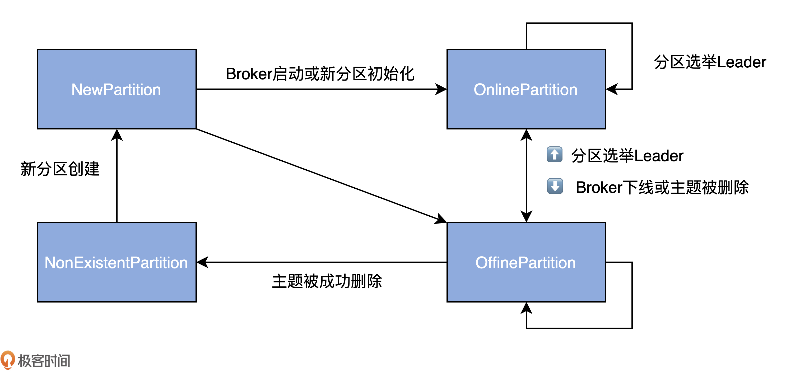
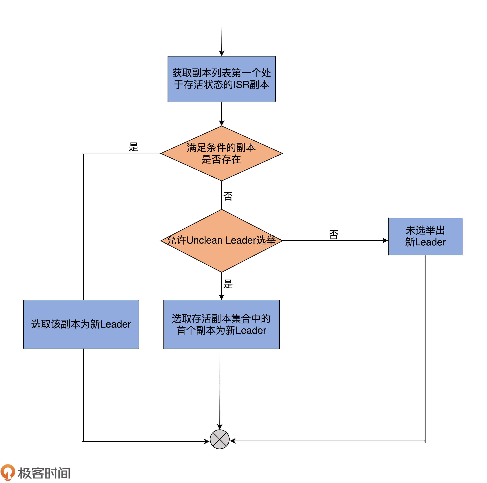
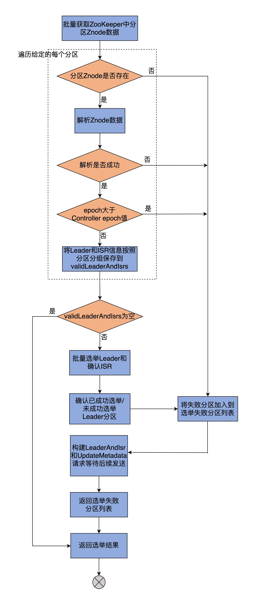

- 00 导读 构建Kafka工程和源码阅读环境、Scala语言热身.md.html
- 00 开篇词 阅读源码，逐渐成了职业进阶道路上的“必选项”.md.html
- 00 重磅加餐 带你快速入门Scala语言.md.html
- 01 日志段：保存消息文件的对象是怎么实现的？.md.html
- 02 日志（上）：日志究竟是如何加载日志段的？.md.html
- 03 日志（下）：彻底搞懂Log对象的常见操作.md.html
- 04 索引（上）：改进的二分查找算法在Kafka索引的应用.md.html
- 05 索引（下）：位移索引和时间戳索引的区别是什么？.md.html
- 06 请求通道：如何实现Kafka请求队列？.md.html
- 07 SocketServer（上）：Kafka到底是怎么应用NIO实现网络通信的？.md.html
- 08 SocketServer（中）：请求还要区分优先级？.md.html
- 09 SocketServer（下）：请求处理全流程源码分析.md.html
- 10 KafkaApis：Kafka最重要的源码入口，没有之一.md.html
- 11 Controller元数据：Controller都保存有哪些东西？有几种状态？.md.html
- 12 ControllerChannelManager：Controller如何管理请求发送？.md.html
- 13 ControllerEventManager：变身单线程后的Controller如何处理事件？.md.html
- 14 Controller选举是怎么实现的？.md.html
- 15 如何理解Controller在Kafka集群中的作用？.md.html
- 16 TopicDeletionManager： Topic是怎么被删除的？.md.html
- 17 ReplicaStateMachine：揭秘副本状态机实现原理.md.html
- 18 PartitionStateMachine：分区状态转换如何实现？.md.html
- 19 TimingWheel：探究Kafka定时器背后的高效时间轮算法.md.html
- 20 DelayedOperation：Broker是怎么延时处理请求的？.md.html
- 21 AbstractFetcherThread：拉取消息分几步？.md.html
- 22 ReplicaFetcherThread：Follower如何拉取Leader消息？.md.html
- 23 ReplicaManager（上）：必须要掌握的副本管理类定义和核心字段.md.html
- 24 ReplicaManager（中）：副本管理器是如何读写副本的？.md.html
- 25 ReplicaManager（下）：副本管理器是如何管理副本的？.md.html
- 26 MetadataCache：Broker是怎么异步更新元数据缓存的？.md.html
- 27 消费者组元数据（上）：消费者组都有哪些元数据？.md.html
- 28 消费者组元数据（下）：Kafka如何管理这些元数据？.md.html
- 29 GroupMetadataManager：组元数据管理器是个什么东西？.md.html
- 30 GroupMetadataManager：位移主题保存的只是位移吗？.md.html
- 31 GroupMetadataManager：查询位移时，不用读取位移主题？.md.html
- 32 GroupCoordinator：在Rebalance中，Coordinator如何处理成员入组？.md.html
- 33 GroupCoordinator：在Rebalance中，如何进行组同步？.md.html
- 特别放送（一）经典的Kafka学习资料有哪些？.md.html
- 特别放送（三）我是怎么度过日常一天的？.md.html
- 特别放送（二）一篇文章带你了解参与开源社区的全部流程.md.html
- 特别放送（五） Kafka 社区的重磅功能：移除 ZooKeeper 依赖.md.html
- 特别放送（四）20道经典的Kafka面试题详解.md.html
- 结束语 源码学习，我们才刚上路呢.md.html
- 捐赠
18 PartitionStateMachine：分区状态转换如何实现？
你好，我是胡夕。今天我们进入到分区状态机（PartitionStateMachine）源码的学习。
PartitionStateMachine负责管理Kafka分区状态的转换，和ReplicaStateMachine是一脉相承的。从代码结构、实现功能和设计原理来看，二者都极为相似。上节课我们已经学过了ReplicaStateMachine，相信你在学习这节课的PartitionStateMachine时，会轻松很多。
在面试的时候，很多面试官都非常喜欢问Leader选举的策略。学完了今天的课程之后，你不但能够说出4种Leader选举的场景，还能总结出它们的共性。对于面试来说，绝对是个加分项！
话不多说，我们就正式开始吧。
PartitionStateMachine简介
PartitionStateMachine.scala文件位于controller包下，代码结构不复杂，可以看下这张思维导图：

代码总共有5大部分。
- PartitionStateMachine：分区状态机抽象类。它定义了诸如startup、shutdown这样的公共方法，同时也给出了处理分区状态转换入口方法handleStateChanges的签名。
- ZkPartitionStateMachine：PartitionStateMachine唯一的继承子类。它实现了分区状态机的主体逻辑功能。和ZkReplicaStateMachine类似，ZkPartitionStateMachine重写了父类的handleStateChanges方法，并配以私有的doHandleStateChanges方法，共同实现分区状态转换的操作。
- PartitionState接口及其实现对象：定义4类分区状态，分别是NewPartition、OnlinePartition、OfflinePartition和NonExistentPartition。除此之外，还定义了它们之间的流转关系。
- PartitionLeaderElectionStrategy接口及其实现对象：定义4类分区Leader选举策略。你可以认为它们是发生Leader选举的4种场景。
- PartitionLeaderElectionAlgorithms：分区Leader选举的算法实现。既然定义了4类选举策略，就一定有相应的实现代码，PartitionLeaderElectionAlgorithms就提供了这4类选举策略的实现代码。
类定义与字段
PartitionStateMachine和ReplicaStateMachine非常类似，我们先看下面这两段代码：
// PartitionStateMachine抽象类定义
abstract class PartitionStateMachine(
controllerContext: ControllerContext) extends Logging {
......
}
// ZkPartitionStateMachine继承子类定义
class ZkPartitionStateMachine(config: KafkaConfig,
stateChangeLogger: StateChangeLogger,
controllerContext: ControllerContext,
zkClient: KafkaZkClient,
controllerBrokerRequestBatch: ControllerBrokerRequestBatch) extends PartitionStateMachine(controllerContext) {
// Controller所在Broker的Id
private val controllerId = config.brokerId
......
}
从代码中，可以发现，它们的类定义一模一样，尤其是ZkPartitionStateMachine和ZKReplicaStateMachine，它们接收的字段列表都是相同的。此刻，你应该可以体会到它们要做的处理逻辑，其实也是差不多的。
同理，ZkPartitionStateMachine实例的创建和启动时机也跟ZkReplicaStateMachine的完全相同，即：每个Broker进程启动时，会在创建KafkaController对象的过程中，生成ZkPartitionStateMachine实例，而只有Controller组件所在的Broker，才会启动分区状态机。
下面这段代码展示了ZkPartitionStateMachine实例创建和启动的位置：
class KafkaController(......) {
......
// 在KafkaController对象创建过程中，生成ZkPartitionStateMachine实例
val partitionStateMachine: PartitionStateMachine =
new ZkPartitionStateMachine(config, stateChangeLogger,
controllerContext, zkClient,
new ControllerBrokerRequestBatch(config,
controllerChannelManager, eventManager, controllerContext,
stateChangeLogger))
......
private def onControllerFailover(): Unit = {
......
replicaStateMachine.startup() // 启动副本状态机
partitionStateMachine.startup() // 启动分区状态机
......
}
}
有句话我要再强调一遍：每个Broker启动时，都会创建对应的分区状态机和副本状态机实例，但只有Controller所在的Broker才会启动它们。如果Controller变更到其他Broker，老Controller所在的Broker要调用这些状态机的shutdown方法关闭它们，新Controller所在的Broker调用状态机的startup方法启动它们。
分区状态
既然ZkPartitionStateMachine是管理分区状态转换的，那么，我们至少要知道分区都有哪些状态，以及Kafka规定的转换规则是什么。这就是PartitionState接口及其实现对象做的事情。和ReplicaState类似，PartitionState定义了分区的状态空间以及流转规则。
我以OnlinePartition状态为例，说明下代码是如何实现流转的：
sealed trait PartitionState {
def state: Byte // 状态序号，无实际用途
def validPreviousStates: Set[PartitionState] // 合法前置状态集合
}
case object OnlinePartition extends PartitionState {
val state: Byte = 1
val validPreviousStates: Set[PartitionState] = Set(NewPartition, OnlinePartition, OfflinePartition)
}
如代码所示，每个PartitionState都定义了名为validPreviousStates的集合，也就是每个状态对应的合法前置状态集。
对于OnlinePartition而言，它的合法前置状态集包括NewPartition、OnlinePartition和OfflinePartition。在Kafka中，从合法状态集以外的状态向目标状态进行转换，将被视为非法操作。
目前，Kafka为分区定义了4类状态。
- NewPartition：分区被创建后被设置成这个状态，表明它是一个全新的分区对象。处于这个状态的分区，被Kafka认为是“未初始化”，因此，不能选举Leader。
- OnlinePartition：分区正式提供服务时所处的状态。
- OfflinePartition：分区下线后所处的状态。
- NonExistentPartition：分区被删除，并且从分区状态机移除后所处的状态。
下图展示了完整的分区状态转换规则：

图中的双向箭头连接的两个状态可以彼此进行转换，如OnlinePartition和OfflinePartition。Kafka允许一个分区从OnlinePartition切换到OfflinePartition，反之亦然。
另外，OnlinePartition和OfflinePartition都有一根箭头指向自己，这表明OnlinePartition切换到OnlinePartition的操作是允许的。当分区Leader选举发生的时候，就可能出现这种情况。接下来，我们就聊聊分区Leader选举那些事儿。
分区Leader选举的场景及方法
刚刚我们说了两个状态机的相同点，接下来，我们要学习的分区Leader选举，可以说是PartitionStateMachine特有的功能了。
每个分区都必须选举出Leader才能正常提供服务，因此，对于分区而言，Leader副本是非常重要的角色。既然这样，我们就必须要了解Leader选举什么流程，以及在代码中是如何实现的。我们重点学习下选举策略以及具体的实现方法代码。
PartitionLeaderElectionStrategy
先明确下分区Leader选举的含义，其实很简单，就是为Kafka主题的某个分区推选Leader副本。
那么，Kafka定义了哪几种推选策略，或者说，在什么情况下需要执行Leader选举呢？
这就是PartitionLeaderElectionStrategy接口要做的事情，请看下面的代码：
// 分区Leader选举策略接口
sealed trait PartitionLeaderElectionStrategy
// 离线分区Leader选举策略
final case class OfflinePartitionLeaderElectionStrategy(
allowUnclean: Boolean) extends PartitionLeaderElectionStrategy
// 分区副本重分配Leader选举策略
final case object ReassignPartitionLeaderElectionStrategy
extends PartitionLeaderElectionStrategy
// 分区Preferred副本Leader选举策略
final case object PreferredReplicaPartitionLeaderElectionStrategy
extends PartitionLeaderElectionStrategy
// Broker Controlled关闭时Leader选举策略
final case object ControlledShutdownPartitionLeaderElectionStrategy
extends PartitionLeaderElectionStrategy
当前，分区Leader选举有4类场景。
- OfflinePartitionLeaderElectionStrategy：因为Leader副本下线而引发的分区Leader选举。
- ReassignPartitionLeaderElectionStrategy：因为执行分区副本重分配操作而引发的分区Leader选举。
- PreferredReplicaPartitionLeaderElectionStrategy：因为执行Preferred副本Leader选举而引发的分区Leader选举。
- ControlledShutdownPartitionLeaderElectionStrategy：因为正常关闭Broker而引发的分区Leader选举。
PartitionLeaderElectionAlgorithms
针对这4类场景，分区状态机的PartitionLeaderElectionAlgorithms对象定义了4个方法，分别负责为每种场景选举Leader副本，这4种方法是：
- offlinePartitionLeaderElection；
- reassignPartitionLeaderElection；
- preferredReplicaPartitionLeaderElection；
- controlledShutdownPartitionLeaderElection。
offlinePartitionLeaderElection方法的逻辑是这4个方法中最复杂的，我们就先从它开始学起。
def offlinePartitionLeaderElection(assignment: Seq[Int],
isr: Seq[Int], liveReplicas: Set[Int],
uncleanLeaderElectionEnabled: Boolean, controllerContext: ControllerContext): Option[Int] = {
// 从当前分区副本列表中寻找首个处于存活状态的ISR副本
assignment.find(id => liveReplicas.contains(id) && isr.contains(id)).orElse {
// 如果找不到满足条件的副本，查看是否允许Unclean Leader选举
// 即Broker端参数unclean.leader.election.enable是否等于true
if (uncleanLeaderElectionEnabled) {
// 选择当前副本列表中的第一个存活副本作为Leader
val leaderOpt = assignment.find(liveReplicas.contains)
if (leaderOpt.isDefined)
controllerContext.stats.uncleanLeaderElectionRate.mark()
leaderOpt
} else {
None // 如果不允许Unclean Leader选举，则返回None表示无法选举Leader
}
}
}
我再画一张流程图，帮助你理解它的代码逻辑：

这个方法总共接收5个参数。除了你已经很熟悉的ControllerContext类，其他4个非常值得我们花一些时间去探究下。
1. assignments
这是分区的副本列表。该列表有个专属的名称，叫Assigned Replicas，简称AR。当我们创建主题之后，使用kafka-topics脚本查看主题时，应该可以看到名为Replicas的一列数据。这列数据显示的，就是主题下每个分区的AR。assignments参数类型是Seq[Int]。这揭示了一个重要的事实：AR是有顺序的，而且不一定和ISR的顺序相同！
2. isr
ISR在Kafka中很有名气，它保存了分区所有与Leader副本保持同步的副本列表。注意，Leader副本自己也在ISR中。另外，作为Seq[Int]类型的变量，isr自身也是有顺序的。
3. liveReplicas
从名字可以推断出，它保存了该分区下所有处于存活状态的副本。怎么判断副本是否存活呢？可以根据Controller元数据缓存中的数据来判定。简单来说，所有在运行中的Broker上的副本，都被认为是存活的。
4. uncleanLeaderElectionEnabled
在默认配置下，只要不是由AdminClient发起的Leader选举，这个参数的值一般是false，即Kafka不允许执行Unclean Leader选举。所谓的Unclean Leader选举，是指在ISR列表为空的情况下，Kafka选择一个非ISR副本作为新的Leader。由于存在丢失数据的风险，目前，社区已经通过把Broker端参数unclean.leader.election.enable的默认值设置为false的方式，禁止Unclean Leader选举了。
值得一提的是，社区于2.4.0.0版本正式支持在AdminClient端为给定分区选举Leader。目前的设计是，如果Leader选举是由AdminClient端触发的，那就默认开启Unclean Leader选举。不过，在学习offlinePartitionLeaderElection方法时，你可以认为uncleanLeaderElectionEnabled=false，这并不会影响你对该方法的理解。
了解了这几个参数的含义，我们就可以研究具体的流程了。
代码首先会顺序搜索AR列表，并把第一个同时满足以下两个条件的副本作为新的Leader返回：
- 该副本是存活状态，即副本所在的Broker依然在运行中；
- 该副本在ISR列表中。
倘若无法找到这样的副本，代码会检查是否开启了Unclean Leader选举：如果开启了，则降低标准，只要满足上面第一个条件即可；如果未开启，则本次Leader选举失败，没有新Leader被选出。
其他3个方法要简单得多，我们直接看代码：
def reassignPartitionLeaderElection(reassignment: Seq[Int], isr: Seq[Int], liveReplicas: Set[Int]): Option[Int] = {
reassignment.find(id => liveReplicas.contains(id) && isr.contains(id))
}
def preferredReplicaPartitionLeaderElection(assignment: Seq[Int], isr: Seq[Int], liveReplicas: Set[Int]): Option[Int] = {
assignment.headOption.filter(id => liveReplicas.contains(id) && isr.contains(id))
}
def controlledShutdownPartitionLeaderElection(assignment: Seq[Int], isr: Seq[Int], liveReplicas: Set[Int], shuttingDownBrokers: Set[Int]): Option[Int] = {
assignment.find(id => liveReplicas.contains(id) && isr.contains(id) && !shuttingDownBrokers.contains(id))
}
可以看到，它们的逻辑几乎是相同的，大概的原理都是从AR，或给定的副本列表中寻找存活状态的ISR副本。
讲到这里，你应该已经知道Kafka为分区选举Leader的大体思路了。基本上就是，找出AR列表（或给定副本列表）中首个处于存活状态，且在ISR列表的副本，将其作为新Leader。
处理分区状态转换的方法
掌握了刚刚的这些知识之后，现在，我们正式来看PartitionStateMachine的工作原理。
handleStateChanges
前面我提到过，handleStateChanges是入口方法，所以我们先看它的方法签名：
def handleStateChanges(
partitions: Seq[TopicPartition],
targetState: PartitionState,
leaderElectionStrategy: Option[PartitionLeaderElectionStrategy]):
Map[TopicPartition, Either[Throwable, LeaderAndIsr]]
如果用一句话概括handleStateChanges的作用，应该这样说：handleStateChanges把partitions的状态设置为targetState，同时，还可能需要用leaderElectionStrategy策略为partitions选举新的Leader，最终将partitions的Leader信息返回。
其中，partitions是待执行状态变更的目标分区列表，targetState是目标状态，leaderElectionStrategy是一个可选项，如果传入了，就表示要执行Leader选举。
下面是handleStateChanges方法的完整代码，我以注释的方式给出了主要的功能说明：
override def handleStateChanges(
partitions: Seq[TopicPartition],
targetState: PartitionState,
partitionLeaderElectionStrategyOpt: Option[PartitionLeaderElectionStrategy]
): Map[TopicPartition, Either[Throwable, LeaderAndIsr]] = {
if (partitions.nonEmpty) {
try {
// 清空Controller待发送请求集合，准备本次请求发送
controllerBrokerRequestBatch.newBatch()
// 调用doHandleStateChanges方法执行真正的状态变更逻辑
val result = doHandleStateChanges(
partitions,
targetState,
partitionLeaderElectionStrategyOpt
)
// Controller给相关Broker发送请求通知状态变化
controllerBrokerRequestBatch.sendRequestsToBrokers(
controllerContext.epoch)
// 返回状态变更处理结果
result
} catch {
// 如果Controller易主，则记录错误日志，然后重新抛出异常
// 上层代码会捕获该异常并执行maybeResign方法执行卸任逻辑
case e: ControllerMovedException =>
error(s"Controller moved to another broker when moving some partitions to $targetState state", e)
throw e
// 如果是其他异常，记录错误日志，封装错误返回
case e: Throwable =>
error(s"Error while moving some partitions to $targetState state", e)
partitions.iterator.map(_ -> Left(e)).toMap
}
} else { // 如果partitions为空，什么都不用做
Map.empty
}
}
整个方法就两步：第1步是，调用doHandleStateChanges方法执行分区状态转换；第2步是，Controller给相关Broker发送请求，告知它们这些分区的状态变更。至于哪些Broker属于相关Broker，以及给Broker发送哪些请求，实际上是在第1步中被确认的。
当然，这个方法的重点，就是第1步中调用的doHandleStateChanges方法。
doHandleStateChanges
先来看这个方法的实现：
private def doHandleStateChanges(
partitions: Seq[TopicPartition],
targetState: PartitionState,
partitionLeaderElectionStrategyOpt: Option[PartitionLeaderElectionStrategy]
): Map[TopicPartition, Either[Throwable, LeaderAndIsr]] = {
val stateChangeLog = stateChangeLogger.withControllerEpoch(controllerContext.epoch)
val traceEnabled = stateChangeLog.isTraceEnabled
// 初始化新分区的状态为NonExistentPartition
partitions.foreach(partition => controllerContext.putPartitionStateIfNotExists(partition, NonExistentPartition))
// 找出要执行非法状态转换的分区，记录错误日志
val (validPartitions, invalidPartitions) = controllerContext.checkValidPartitionStateChange(partitions, targetState)
invalidPartitions.foreach(partition => logInvalidTransition(partition, targetState))
// 根据targetState进入到不同的case分支
targetState match {
......
}
}
这个方法首先会做状态初始化的工作，具体来说就是，在方法调用时，不在元数据缓存中的所有分区的状态，会被初始化为NonExistentPartition。
接着，检查哪些分区执行的状态转换不合法，并为这些分区记录相应的错误日志。
之后，代码携合法状态转换的分区列表进入到case分支。由于分区状态只有4个，因此，它的case分支代码远比ReplicaStateMachine中的简单，而且，只有OnlinePartition这一路的分支逻辑相对复杂，其他3路仅仅是将分区状态设置成目标状态而已，
所以，我们来深入研究下目标状态是OnlinePartition的分支：
case OnlinePartition =>
// 获取未初始化分区列表，也就是NewPartition状态下的所有分区
val uninitializedPartitions = validPartitions.filter(
partition => partitionState(partition) == NewPartition)
// 获取具备Leader选举资格的分区列表
// 只能为OnlinePartition和OfflinePartition状态的分区选举Leader
val partitionsToElectLeader = validPartitions.filter(
partition => partitionState(partition) == OfflinePartition ||
partitionState(partition) == OnlinePartition)
// 初始化NewPartition状态分区，在ZooKeeper中写入Leader和ISR数据
if (uninitializedPartitions.nonEmpty) {
val successfulInitializations = initializeLeaderAndIsrForPartitions(uninitializedPartitions)
successfulInitializations.foreach { partition =>
stateChangeLog.info(s"Changed partition $partition from ${partitionState(partition)} to $targetState with state " +
s"${controllerContext.partitionLeadershipInfo(partition).leaderAndIsr}")
controllerContext.putPartitionState(partition, OnlinePartition)
}
}
// 为具备Leader选举资格的分区推选Leader
if (partitionsToElectLeader.nonEmpty) {
val electionResults = electLeaderForPartitions(
partitionsToElectLeader,
partitionLeaderElectionStrategyOpt.getOrElse(
throw new IllegalArgumentException("Election strategy is a required field when the target state is OnlinePartition")
)
)
electionResults.foreach {
case (partition, Right(leaderAndIsr)) =>
stateChangeLog.info(
s"Changed partition $partition from ${partitionState(partition)} to $targetState with state $leaderAndIsr"
)
// 将成功选举Leader后的分区设置成OnlinePartition状态
controllerContext.putPartitionState(
partition, OnlinePartition)
case (_, Left(_)) => // 如果选举失败，忽略之
}
// 返回Leader选举结果
electionResults
} else {
Map.empty
}
虽然代码有点长，但总的步骤就两步。
第1步是为NewPartition状态的分区做初始化操作，也就是在ZooKeeper中，创建并写入分区节点数据。节点的位置是/brokers/topics/<topic>/partitions/<partition>，每个节点都要包含分区的Leader和ISR等数据。而Leader和ISR的确定规则是：选择存活副本列表的第一个副本作为Leader；选择存活副本列表作为ISR。至于具体的代码，可以看下initializeLeaderAndIsrForPartitions方法代码片段的倒数第5行：
private def initializeLeaderAndIsrForPartitions(partitions: Seq[TopicPartition]): Seq[TopicPartition] = {
......
// 获取每个分区的副本列表
val replicasPerPartition = partitions.map(partition => partition -> controllerContext.partitionReplicaAssignment(partition))
// 获取每个分区的所有存活副本
val liveReplicasPerPartition = replicasPerPartition.map { case (partition, replicas) =>
val liveReplicasForPartition = replicas.filter(replica => controllerContext.isReplicaOnline(replica, partition))
partition -> liveReplicasForPartition
}
// 按照有无存活副本对分区进行分组
// 分为两组：有存活副本的分区；无任何存活副本的分区
val (partitionsWithoutLiveReplicas, partitionsWithLiveReplicas) = liveReplicasPerPartition.partition { case (_, liveReplicas) => liveReplicas.isEmpty }
......
// 为"有存活副本的分区"确定Leader和ISR
// Leader确认依据：存活副本列表的首个副本被认定为Leader
// ISR确认依据：存活副本列表被认定为ISR
val leaderIsrAndControllerEpochs = partitionsWithLiveReplicas.map { case (partition, liveReplicas) =>
val leaderAndIsr = LeaderAndIsr(liveReplicas.head, liveReplicas.toList)
......
}.toMap
......
}
第2步是为具备Leader选举资格的分区推选Leader，代码调用electLeaderForPartitions方法实现。这个方法会不断尝试为多个分区选举Leader，直到所有分区都成功选出Leader。
选举Leader的核心代码位于doElectLeaderForPartitions方法中，该方法主要有3步。
代码很长，我先画一张图来展示它的主要步骤，然后再分步骤给你解释每一步的代码，以免你直接陷入冗长的源码行里面去。

看着好像图也很长，别着急，我们来一步步拆解下。
就像前面说的，这个方法大体分为3步。第1步是从ZooKeeper中获取给定分区的Leader、ISR信息，并将结果封装进名为validLeaderAndIsrs的容器中，代码如下：
// doElectLeaderForPartitions方法的第1部分
val getDataResponses = try {
// 批量获取ZooKeeper中给定分区的znode节点数据
zkClient.getTopicPartitionStatesRaw(partitions)
} catch {
case e: Exception =>
return (partitions.iterator.map(_ -> Left(e)).toMap, Seq.empty)
}
// 构建两个容器，分别保存可选举Leader分区列表和选举失败分区列表
val failedElections = mutable.Map.empty[TopicPartition, Either[Exception, LeaderAndIsr]]
val validLeaderAndIsrs = mutable.Buffer.empty[(TopicPartition, LeaderAndIsr)]
// 遍历每个分区的znode节点数据
getDataResponses.foreach { getDataResponse =>
val partition = getDataResponse.ctx.get.asInstanceOf[TopicPartition]
val currState = partitionState(partition)
// 如果成功拿到znode节点数据
if (getDataResponse.resultCode == Code.OK) {
TopicPartitionStateZNode.decode(getDataResponse.data, getDataResponse.stat) match {
// 节点数据中含Leader和ISR信息
case Some(leaderIsrAndControllerEpoch) =>
// 如果节点数据的Controller Epoch值大于当前Controller Epoch值
if (leaderIsrAndControllerEpoch.controllerEpoch > controllerContext.epoch) {
val failMsg = s"Aborted leader election for partition $partition since the LeaderAndIsr path was " +
s"already written by another controller. This probably means that the current controller $controllerId went through " +
s"a soft failure and another controller was elected with epoch ${leaderIsrAndControllerEpoch.controllerEpoch}."
// 将该分区加入到选举失败分区列表
failedElections.put(partition, Left(new StateChangeFailedException(failMsg)))
} else {
// 将该分区加入到可选举Leader分区列表
validLeaderAndIsrs += partition -> leaderIsrAndControllerEpoch.leaderAndIsr
}
// 如果节点数据不含Leader和ISR信息
case None =>
val exception = new StateChangeFailedException(s"LeaderAndIsr information doesn't exist for partition $partition in $currState state")
// 将该分区加入到选举失败分区列表
failedElections.put(partition, Left(exception))
}
// 如果没有拿到znode节点数据，则将该分区加入到选举失败分区列表
} else if (getDataResponse.resultCode == Code.NONODE) {
val exception = new StateChangeFailedException(s"LeaderAndIsr information doesn't exist for partition $partition in $currState state")
failedElections.put(partition, Left(exception))
} else {
failedElections.put(partition, Left(getDataResponse.resultException.get))
}
}
if (validLeaderAndIsrs.isEmpty) {
return (failedElections.toMap, Seq.empty)
}
首先，代码会批量读取ZooKeeper中给定分区的所有Znode数据。之后，会构建两个容器，分别保存可选举Leader分区列表和选举失败分区列表。接着，开始遍历每个分区的Znode节点数据，如果成功拿到Znode节点数据，节点数据包含Leader和ISR信息且节点数据的Controller Epoch值小于当前Controller Epoch值，那么，就将该分区加入到可选举Leader分区列表。倘若发现Zookeeper中保存的Controller Epoch值大于当前Epoch值，说明该分区已经被一个更新的Controller选举过Leader了，此时必须终止本次Leader选举，并将该分区放置到选举失败分区列表中。
遍历完这些分区之后，代码要看下validLeaderAndIsrs容器中是否包含可选举Leader的分区。如果一个满足选举Leader的分区都没有，方法直接返回。至此，doElectLeaderForPartitions方法的第一大步完成。
下面，我们看下该方法的第2部分代码：
// doElectLeaderForPartitions方法的第2部分
// 开始选举Leader，并根据有无Leader将分区进行分区
val (partitionsWithoutLeaders, partitionsWithLeaders) =
partitionLeaderElectionStrategy match {
case OfflinePartitionLeaderElectionStrategy(allowUnclean) =>
val partitionsWithUncleanLeaderElectionState = collectUncleanLeaderElectionState(
validLeaderAndIsrs,
allowUnclean
)
// 为OffinePartition分区选举Leader
leaderForOffline(controllerContext, partitionsWithUncleanLeaderElectionState).partition(_.leaderAndIsr.isEmpty)
case ReassignPartitionLeaderElectionStrategy =>
// 为副本重分配的分区选举Leader
leaderForReassign(controllerContext, validLeaderAndIsrs).partition(_.leaderAndIsr.isEmpty)
case PreferredReplicaPartitionLeaderElectionStrategy =>
// 为分区执行Preferred副本Leader选举
leaderForPreferredReplica(controllerContext, validLeaderAndIsrs).partition(_.leaderAndIsr.isEmpty)
case ControlledShutdownPartitionLeaderElectionStrategy =>
// 为因Broker正常关闭而受影响的分区选举Leader
leaderForControlledShutdown(controllerContext, validLeaderAndIsrs).partition(_.leaderAndIsr.isEmpty)
}
这一步是根据给定的PartitionLeaderElectionStrategy，调用PartitionLeaderElectionAlgorithms的不同方法执行Leader选举，同时，区分出成功选举Leader和未选出Leader的分区。
前面说过了，这4种不同的策略定义了4个专属的方法来进行Leader选举。其实，如果你打开这些方法的源码，就会发现它们大同小异。基本上，选择Leader的规则，就是选择副本集合中首个存活且处于ISR中的副本作为Leader。
现在，我们再来看这个方法的最后一部分代码，这一步主要是更新ZooKeeper节点数据，以及Controller端元数据缓存信息。
// doElectLeaderForPartitions方法的第3部分
// 将所有选举失败的分区全部加入到Leader选举失败分区列表
partitionsWithoutLeaders.foreach { electionResult =>
val partition = electionResult.topicPartition
val failMsg = s"Failed to elect leader for partition $partition under strategy $partitionLeaderElectionStrategy"
failedElections.put(partition, Left(new StateChangeFailedException(failMsg)))
}
val recipientsPerPartition = partitionsWithLeaders.map(result => result.topicPartition -> result.liveReplicas).toMap
val adjustedLeaderAndIsrs = partitionsWithLeaders.map(result => result.topicPartition -> result.leaderAndIsr.get).toMap
// 使用新选举的Leader和ISR信息更新ZooKeeper上分区的znode节点数据
val UpdateLeaderAndIsrResult(finishedUpdates, updatesToRetry) = zkClient.updateLeaderAndIsr(
adjustedLeaderAndIsrs, controllerContext.epoch, controllerContext.epochZkVersion)
// 对于ZooKeeper znode节点数据更新成功的分区，封装对应的Leader和ISR信息
// 构建LeaderAndIsr请求，并将该请求加入到Controller待发送请求集合
// 等待后续统一发送
finishedUpdates.foreach { case (partition, result) =>
result.foreach { leaderAndIsr =>
val replicaAssignment = controllerContext.partitionFullReplicaAssignment(partition)
val leaderIsrAndControllerEpoch = LeaderIsrAndControllerEpoch(leaderAndIsr, controllerContext.epoch)
controllerContext.partitionLeadershipInfo.put(partition, leaderIsrAndControllerEpoch)
controllerBrokerRequestBatch.addLeaderAndIsrRequestForBrokers(recipientsPerPartition(partition), partition,
leaderIsrAndControllerEpoch, replicaAssignment, isNew = false)
}
}
// 返回选举结果，包括成功选举并更新ZooKeeper节点的分区、选举失败分区以及
// ZooKeeper节点更新失败的分区
(finishedUpdates ++ failedElections, updatesToRetry)
首先，将上一步中所有选举失败的分区，全部加入到Leader选举失败分区列表。
然后，使用新选举的Leader和ISR信息，更新ZooKeeper上分区的Znode节点数据。对于ZooKeeper Znode节点数据更新成功的那些分区，源码会封装对应的Leader和ISR信息，构建LeaderAndIsr请求，并将该请求加入到Controller待发送请求集合，等待后续统一发送。
最后，方法返回选举结果，包括成功选举并更新ZooKeeper节点的分区列表、选举失败分区列表，以及ZooKeeper节点更新失败的分区列表。
这会儿，你还记得handleStateChanges方法的第2步是Controller给相关的Broker发送请求吗？那么，到底要给哪些Broker发送哪些请求呢？其实就是在上面这步完成的，即这行语句：
controllerBrokerRequestBatch.addLeaderAndIsrRequestForBrokers(
recipientsPerPartition(partition), partition,
leaderIsrAndControllerEpoch, replicaAssignment, isNew = false)
总结
今天，我们重点学习了PartitionStateMachine.scala文件的源码，主要是研究了Kafka分区状态机的构造原理和工作机制。
学到这里，我们再来回答开篇面试官的问题，应该就不是什么难事了。现在我们知道了，Kafka目前提供4种Leader选举策略，分别是分区下线后的Leader选举、分区执行副本重分配时的Leader选举、分区执行Preferred副本Leader选举，以及Broker下线时的分区Leader选举。
这4类选举策略在选择Leader这件事情上有着类似的逻辑，那就是，它们几乎都是选择当前副本有序集合中的、首个处于ISR集合中的存活副本作为新的Leader。当然，个别选举策略可能会有细小的差别，你可以结合我们今天学到的源码，课下再深入地研究一下每一类策略的源码。
我们来回顾下这节课的重点。
- PartitionStateMachine是Kafka Controller端定义的分区状态机，负责定义、维护和管理合法的分区状态转换。
- 每个Broker启动时都会实例化一个分区状态机对象，但只有Controller所在的Broker才会启动它。
- Kafka分区有4类状态，分别是NewPartition、OnlinePartition、OfflinePartition和NonExistentPartition。其中OnlinPartition是分区正常工作时的状态。NewPartition是未初始化状态，处于该状态下的分区尚不具备选举Leader的资格。
- Leader选举有4类场景，分别是Offline、Reassign、Preferrer Leader Election和ControlledShutdown。每类场景都对应于一种特定的Leader选举策略。
- handleStateChanges方法是主要的入口方法，下面调用doHandleStateChanges私有方法实现实际的Leader选举功能。
下个模块，我们将来到Kafka延迟操作代码的世界。在那里，你能了解Kafka是如何实现一个延迟请求的处理的。另外，一个O(N)时间复杂度的时间轮算法也等候在那里，到时候我们一起研究下它！
课后讨论
源码中有个triggerOnlineStateChangeForPartitions方法，请你分析下，它是做什么用的，以及它何时被调用？
欢迎你在留言区畅所欲言，跟我交流讨论，也欢迎你把今天的内容分享给你的朋友。
© 2019 - 2023 Liangliang Lee. Powered by gin and hexo-theme-book.